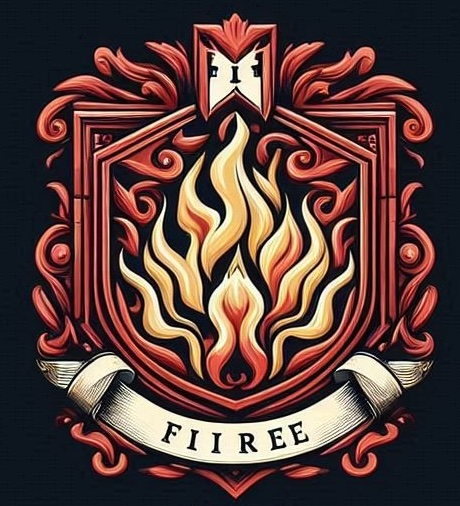
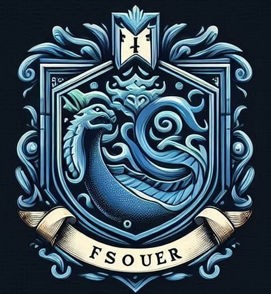
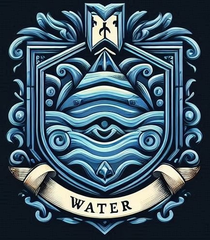
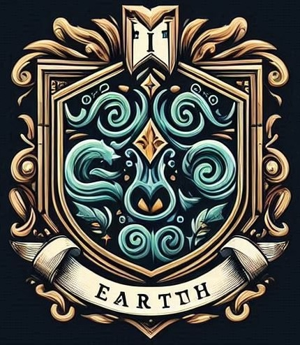

Le Casate
Casata del Fuoco
La Casata del Fuoco è nota per la sua passione ardente e il coraggio indomito. I suoi membri sono spesso impulsivi ma leali, e possiedono un'incredibile forza interiore.
Casata dell'Aria
La Casata dell'Aria è caratterizzata dalla sua natura libera e creativa. I suoi membri sono noti per la loro intelligenza acuta e la capacità di adattarsi rapidamente alle situazioni.
Casata dell'Acqua
La Casata dell'Acqua è rinomata per la sua saggezza e compassione. I suoi membri sono empatici e intuitivi, capaci di comprendere profondamente le emozioni altrui.
Casata della Terra
La Casata della Terra è simbolo di stabilità e forza. I suoi membri sono noti per la loro determinazione e affidabilità, sempre pronti a sostenere gli altri nei momenti di bisogno.